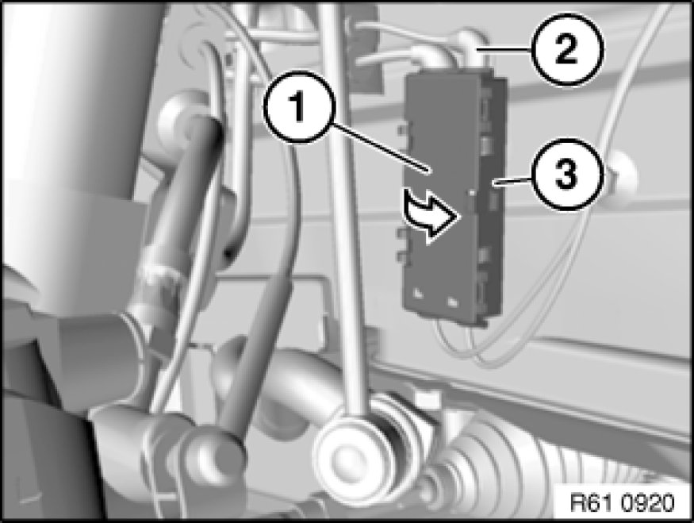
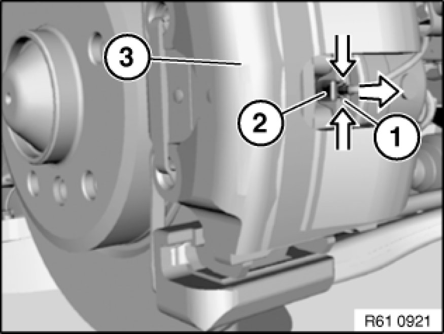

Replacing a Brake Pad Sensor (Front)
34 35 001 - Replacing a brake pad sensor (front)

Important!
If a brake pad sensor that has already been ground has to be replaced even though the minimum brake pad thickness has not yet been reached, you must observe the following: The new sliding contact must be filed down with a file to the same length as the ground sliding contact.

Necessary preliminary tasks:
- Remove wheel Removing or Installing Front or Rear Wheel

Open plug housing (1).
Unclip lead of brake pad sensor (2) from plug housing (1).
Disconnect associated plug connection of lead from brake pad sensor (2).
Expose lead for brake pad sensor up to brake pad.

Press clip (1) together and detach brake pad sensor (2) in direction of arrow from brake pad (3).
Installation Note:
Make sure clip (1) and brake pad sensor (2) are correctly seated in brake pad (3).